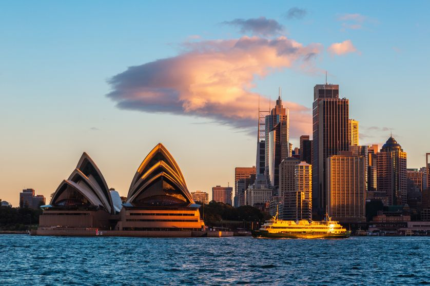

Les Animaux d'Austalie


Tournée des grands classiques de l’Australie, de Sydney à la Grande Barrière de corail, en passant par Kukudu et Uluru.
En savoir plus... L'Australie est une destination sûre, où vous vous sentirez vite en sécurité. Les villes australiennes ne présentent en effet aucun risque majeur d'insécurité ou de grand banditisme. Le pays a même un taux de criminalité plus faible que les autres pays développés!